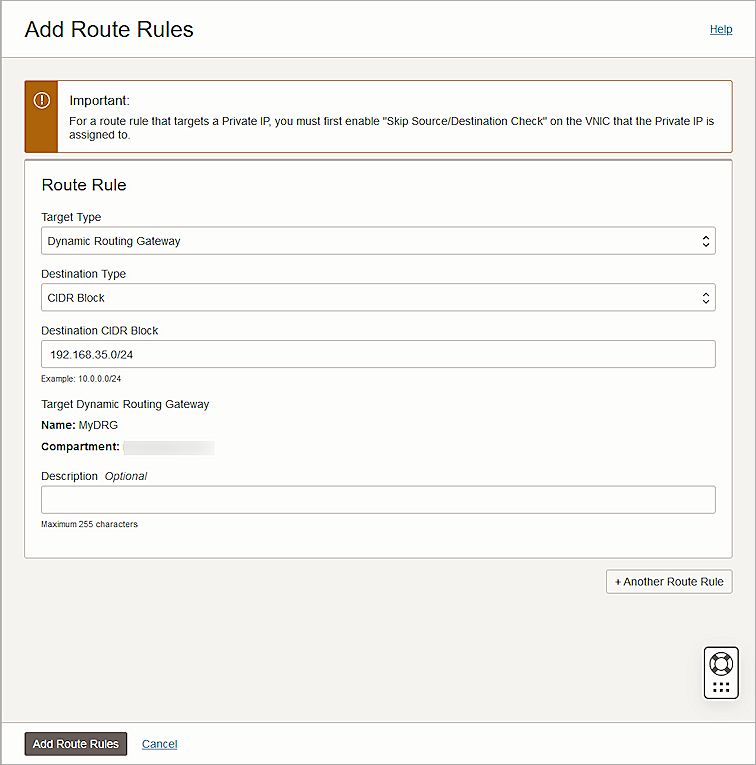
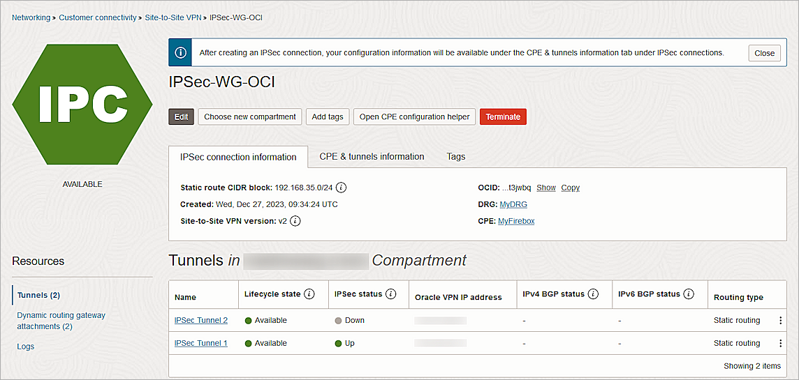

Oracle Bare Metal BOVPN® service is a service offered by Oracle Cloud Infrastructure. This document describes the basic steps to build a Branch Office VPN (BOVPN) virtual interface connection between the Oracle Cloud Infrastructure and the WatchGuard Firebox.
WatchGuard provides integration instructions to help our customers configure WatchGuard products to work with products created by other organizations. If you need more information or technical support about how to configure a third-party product, see the documentation and support resources for that product.
Contents
Platform and Software
The hardware and software used in this document include:
- WatchGuard Firebox with Fireware v12.10.1
- Oracle Cloud Infrastructure account
Configure the Oracle Bare Metal VPN
For information about the basic structure to set up a site-to-site VPN, go to the Oracle documentation.
To configure the Oracle Bare Metal VPN:
- Create a Virtual Cloud Network and Subnet.
- Create the Dynamic Routing Gateway and Virtual Cloud Network Attachment.
- Update the Routing Table.
- Update the Security List.
- Create the Customer-Premises Equipment (CPE).
- Create an IPSec Connection.
Create a Virtual Cloud Network and Subnet
To create a virtual cloud network and subnet:
- Log in to the Oracle Cloud with an administrator account.
- From the navigation menu, select Networking > Virtual Cloud Networks.
- From the Compartment drop-down list, select your compartment. The available compartment depends on your permission.
- Click Create VCN.
The Create a Virtual Cloud Network page opens.
- In the Name text box, type a name. In this example, we use MyVCN
- In the IPv4 CIDR Blocks text box, type your CIDR block.
- Keep the default values for other settings.
- Click Create VCN.
The virtual cloud network is created with a default route table and security list.
- To view the default route table, from the Resources section, click Route Tables.

- To view the default security list, from the Resources section, click Security Lists.
- Click Subnets(0), then click Create Subnet.
The Create Subnet page opens.
- In the Name text box, type a name.
- In the IPv4 CIDR Block text box, type the CIDR block. Generally, a subnet CIDR block is smaller than the VCN CIDR block.
- From the Route Table drop-down list, select the default route table.
- For Subnet Access, select Private Subnet.
- From the Security Lists drop-down list, select the default security list.
- Keep the default values for other settings.
- Click Create Subnet.
Create the Dynamic Routing Gateway and Virtual Cloud Network Attachment
To create the Dynamic Routing Gateway and Virtual Cloud Network Attachment:
- From the navigation menu, select Networking > Customer Connectivity > Dynamic Routing Gateway.
- From the Compartment drop-down list, select your compartment.
- Click Create Dynamic Routing Gateway.
The Create Dynamic Routing Gateway page opens.
- In the Name text box, type a name.
- Click Create Dynamic Routing Gateway.
The Dynamic Routing Gateway is created.
- From the Resources section, click VCN Attachments.
- Click Create Virtual Cloud Network Attachment.
The Create VCN Attachment page opens.
- In the Attachment Name text box, type a name.
- From the Virtual Cloud Network drop-down list, select the VCN you created in Create a Virtual Cloud Network and Subnet.
- Click Create VCN Attachment.
Update the Routing Table
To update the routing table:
- From the navigation menu, select Networking > Virtual Cloud Networks.
- Select the VCN you created in Create a Virtual Cloud Network and Subnet.
- From the Resources section, click Route Tables.
- Select the default route table.
- Click Add Route Rules.
The Add Route Rules page opens.

- From the Target Type drop-down list, select Dynamic Routing Gateway.
- From the Destination Type drop-down list, select CIDR Block.
- In the Destination CIDR Block text box, type the destination CIDR block.
- Click Add Route Rules.
Update the Security List
To update the security list:
- From the navigation menu, select Networking > Virtual Cloud Networks.
- Select the VCN you created in Create a Virtual Cloud Network and Subnet.
- From the Resources section, click Security Lists.
- Click the default security list you created in Create a Virtual Cloud Network and Subnet
- From the Resources section, click Ingress Rules.
The Ingress Rules page opens.
- Select the rules you want to update, then click Edit.
- For the ICMP protocol rules, update the Type to All.
- Click Save Changes.
For test purposes, we allow inbound ICMP traffic on all ports. Remove this rule after you complete the test.
Create the Customer-Premises Equipment (CPE)
To create the customer-premises equipment:
- From the navigation menu, select Networking > Customer Connectivity > Customer-Premises Equipment.
- From the Compartment drop-down list, select your compartment.
- Click Create CPE.
The Create CPE page opens.
- In the Name text box, type a name.
- In the IP Address text box, type the public IP address of your Firebox.
- From the CPE Vendor Information section, from the Vendor drop-down list, select WatchGuard.
- From the Platform/Version drop-down list, select Firebox with Fireware v12.
- Keep the default values for other settings.
- Click Create CPE.
Create an IPSec Connection
To create an IPSec connection:
- From the navigation menu, select Networking > Customer Connectivity > Site-to-Site VPN.
- Click Create IPSec Connection.
The Create IPSec Connection page opens.
- In the Name text box, type a name.
- From the Create in Compartment drop-down list, select your compartment.
- From the Customer-Premises Equipment drop-down list, select the CPE object you created in Create the Customer-Premises Equipment (CPE).
- From the Dynamic Routing Gateway Compartment drop-down list, select the DRG you created earlier.
- In the Routes to Your On-Premises Network text box, type your on-premise network.
- Expand the Tunnel 1 section.
The Tunnel 1 settings appear.
- In the Name text box, type a name.
- Select the Provide Custom Shared Secret check box.
- In the Shared Secret text box, type the shared secret key.
- From the IKE Version drop-down list, select IKEv2.
- For Routing Type, select Static Routing.
- Click Show Advanced Options.
The Tunnel 1 advanced options appear.
- Expand Phase One (ISAKMP) Configuration.
- Select the Set Custom Configurations check box.
- From the Custom Encryption Algorithm drop-down list, select AES_256_CBC.
- From the Custom Authentication Algorithm drop-down list, select SHA2_256.
- From the Custom Diffie-Hellman Group drop-down list, select GROUP14.
- Expand Phase Two (IPSec) Configuration.
The Phase Two (IPSec) Configuration settings appear.
- Select the Set Custom Configurations check box.
- From the Custom Encryption Algorithm drop-down list, select AES_256_CBC.
- From the Custom Authentication Algorithm drop-down list, select HMAC_SHA2_256_128.
- Keep the default values for other settings.
- Repeat steps 8-24 to configure Tunnel 2.
- Click Create IPSec Connection.
- From the new IPSec connection, from the Oracle VPN IP Address column, copy the IP addresses.
Configure the Firebox
To configure the Firebox, you must:
Configure the Phase 2 IPSec Proposal
To configure the Phase 2 IPSec proposal:
- Log in to Fireware Web UI at https://<your firebox IP address>:8080.
- Select VPN > Phase 2 Proposals.
- To create a new proposal, click Add.
The Phase 2 Proposal Add page opens.
- In the Name text box, type a name for the proposal.
- (Optional) In the Description text box, type a description.
- From the Type drop-down list, select ESP (Encapsulating Security Payload).
- From the Authentication drop-down list, select SHA2-256.
- From the Encryption drop-down list, select AES(256-bit).
- For Force Key Expiration, select the Time check box, then type 1 hour.
- Click Save.
Configure the BOVPN Virtual Interface
To configure the BOVPN virtual interface:
- Select VPN > BOVPN Virtual Interfaces.
The BOVPN Virtual Interfaces configuration page opens. - Click Add.
The BOVPN Virtual Interfaces Add page opens.

- In the Interface Name text box, type a name to identify this BOVPN virtual interface.
- From the Remote Endpoint Type drop-down list, select Cloud VPN or Third-Party Gateway.
- From the Gateway Address Family drop-down list, select IPv4 Addresses.
- From the Credential Method section, select Use Pre-Shared Key.
- In the adjacent text box, type the pre-shared key.
- From the Gateway Endpoint section, click Add.
The Gateway Endpoint Settings dialog box opens.
- From the Physical drop-down list, select External.
- From the Interface IP Address drop-down list, select Primary Interface IPv4 Address.
The Primary Interface IP Address is the primary IP address you configured on the selected external interface. - Select By IP Address.
- In the adjacent text box, type the public IP address of the External Firebox interface.
- Select the Remote Gateway tab.
- Select Static IP Address.
- In the adjacent text box, type the Oracle VPN IP address that you copied from the Oracle Bare Metal IPSec connection.
- Select By IP Address.
- In the adjacent text box, type the Oracle VPN IP address that you copied from the Oracle Bare Metal IPSec connection.
- Click OK.
The Gateway Endpoint details appear on the BOVPN Virtual Interfaces Add page.
- From the Gateway Endpoint section, select the Start Phase 1 Tunnel When it is Inactive check box.
- Select the Add This Tunnel to the BOVPN-Allow Policies check box.
- Select the VPN Routes tab.
- Click Add.
The VPN Route Settings dialog box opens.
- From the Choose Type drop-down list, select Network IPv4.
- In the Route To text box, type the Network IP address of a route that uses this virtual interface.
- For Metric, type 1.
- Click OK.
The VPN Route details appear on the BOVPN Virtual Interfaces Add page.
- Select the Phase 1 Settings tab.
- From the Version drop-down list, select IKEv2.
- From the Transform Settings section, select the default setting, then click Edit.
The Transform Settings dialog box opens.
- In the SA Life text box, type 8 and select Hours from the drop-down list.
- Keep the default values for all other settings.
- Click OK.
The Transform Settings appear on the BOVPN Virtual Interfaces Add page.
- Select the Phase 2 Settings tab.
- Select the Enable Perfect Forward Secrecy check box.
- From the adjacent drop-down list, select Diffie-Hellman Group 5.
- From the IPSec Proposals section, from the Phase 2 Proposals drop-down list, select the phase 2 proposal you created, then click Add.
- Remove any other proposals that appear in the list.
- Click Save.
- Repeat steps 1-38 to create another BOVPN virtual interface, with these changes:
- In Steps 15 and 17, specify the other Oracle VPN IP address.
- In Step 25, for Metric, type 2.
Test the Integration
To test the integration, from Oracle Bare Metal:
- Make sure your IPSec connection status is Up and green.
Oracle provisions two IPSec tunnels for the connection, only one of which is up. For more information about the IPSec tunnel redundancy, go to the Oracle Cloud Infrastructure documentation.

- Launch an instance into the VCN.
For information about how to launch an instance, go to the Oracle Cloud Infrastructure documentation. - Ping the instance from your on-premise network.
To test the integration, from Fireware Web UI:
- Select System Status > VPN Statistics.
- Select the Branch Office VPN tab.
- Verify that the VPN is established.
- Verify that Host1 (behind the Firebox) is able to ping Host2 (in the Oracle Cloud).